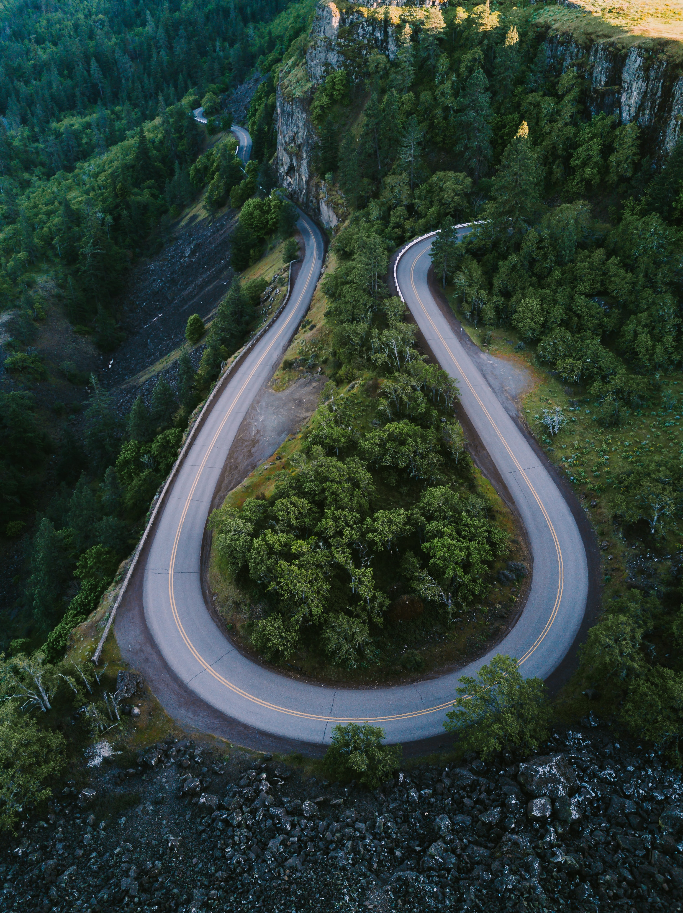

A water bottle, a packet of biscuits, assorted nuts and a fruit. Choice of music, wet tissues and yeah the travel kit; everything seems to be in place. Going on holiday anywhere? Nah.. just to work.
With the city expanding its boundaries and work taking us farther and farther away from home, leaving home with such preparations has become a necessity. While the distance travelled itself may be long, traffic snarls prolong the time spent on the road even more. Some people have a mechanism in place to beat the peak hour traffic blues. “Leave home early and leave work late, after everyone has left. That is the only time the roads get relatively free and I can save myself from being stuck in the traffic and avoid getting exposed to air pollution,” says Surya Prakash Rao who works with the tourism department as a special duty officer. Surya Prakash doesn’t have to travel far, but the traffic makes it a long commute. “I don’t want to shift from where I am staying because I love the silence of the place,” adds Surya Prakash. (Surya Prakash is one of the lucky lots who needn’t travel more than 12 kilometres. But there are some who travel 25 kilometres one way just so they can live in peaceful surroundings and amidst greenery, away from the concrete jungle where they work.